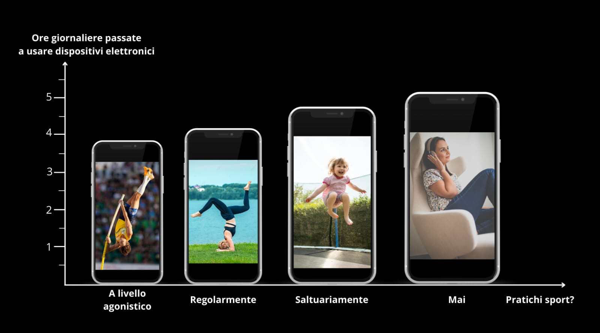

Project Work

L'Esperienza
Sviluppato in collaborazione con gli esperti di infoSOStenibile (giornale bergamasco dedicato all'ambiente e all'economia circolare) e del DESS BG (Distretto di Economia Sociale e Solidale della provincia di Bergamo), il progetto ha l'obiettivo di formare i ragazzi sui temi dello sviluppo sostenibile e della cittadinanza consapevole.
description Indagine Statistica
Lavorando in un gruppo di 4 persone, abbiamo condotto un'indagine statistica somministrata agli studenti del Liceo "Edoardo Amaldi". Nello specifico, ci siamo occupati di analizzare e mettere in relazione la quantità di sport praticato dai giovani rispetto al tempo trascorso sui dispositivi elettronici.
edit_document Redazione dell'Articolo
Dopo aver appreso la struttura editoriale di una pagina di giornale, abbiamo elaborato le infografiche e i grafici per visualizzare i dati raccolti. Ho curato personalmente la stesura del testo esplicativo e delle conclusioni dell'articolo, sintetizzando i comportamenti emersi e uniformando il lavoro del team prima della consegna.